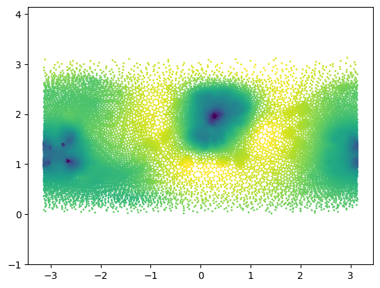
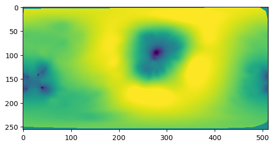
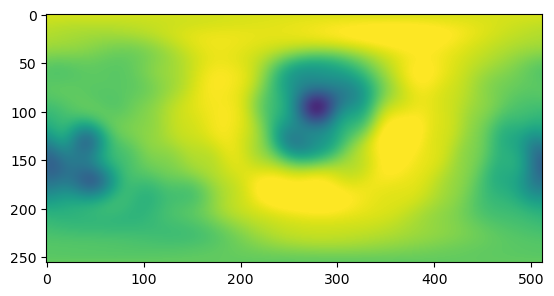
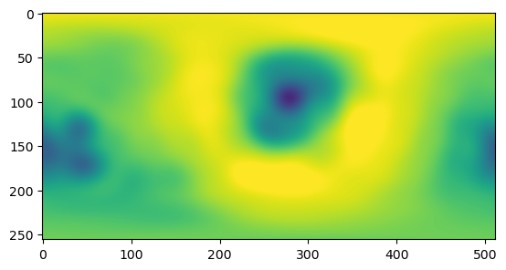
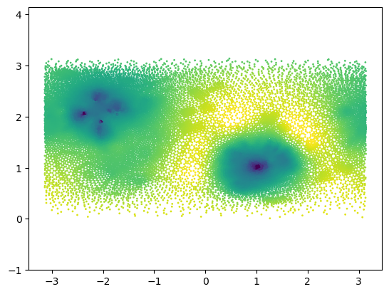
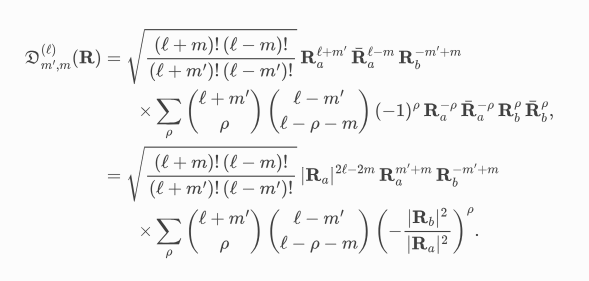

# let's get a test case - a mesh obtained by mapping a mesh conformally to the sphere
mesh = tcmesh.ObjMesh.read_obj("datasets/movie_example/map_to_sphere.obj")
mesh_3d = tcmesh.ObjMesh.read_obj("datasets/movie_example/final_uv.obj")3D-rotation registration
Find the 3D rotation that aligns data on the sphere. Part of pipeline for multiple recordings.
Here, we build tools to rotationally align data defined on a 2d-sphere using spherical harmonics. We consider the following problem: given two scalar functions \(f,h: S^2 \rightarrow \mathbb{R}\) on the sphere, find the rotation \(g\in O(3)\) that best aligns them, in the sense that it maximizes \(\int d\Omega f(x) h(g^{-1}x)\). We call \(f\) the source and \(h\) the target signal.
We expand the functions in terms of spherical harmonics, use the Wigner D-matrices to compute the effect of rotation, and find the best possible rotation via optimization.
In principle, the above could be done more efficiently using the fast spherical harmonics transform and the fast inverse Wigner transform. To minimize dependencies and keep the code simple, we won’t do that here, .
Spherical harmonics
We will represent spherical harmonics coefficients as dicts, indexed by total angular momentum \(l\), with an entry being a vector for the different \(m=-l,..., l\). Since we have real signals, we can get negative \(m\) from the positive ones.
spherical_to_cartesian
spherical_to_cartesian (r, theta, phi)
*Convert spherical coordinates to cartesian coordinates.
Uses en.wikipedia.org/wiki/Spherical_coordinate_system convention.*
| Type | Details | |
|---|---|---|
| r | ||
| theta | ||
| phi | ||
| Returns | np.array of shape (…, 3) | array of x/y/z coordinates. Last axis indexes coordinate axes. |
cartesian_to_spherical
cartesian_to_spherical (arr)
*Convert cartesian coordinates to spherical coordinates.
Uses en.wikipedia.org/wiki/Spherical_coordinate_system convention.*
| Type | Details | |
|---|---|---|
| arr | np.array of shape (…, 3) | array of x/y/z coordinates. last axis indexes coordinate axes. |
| Returns | np.array, np.array, np.array | r, theta, phi spherical coordinates |
# as test signal, let's use the log(areas) of the mesh triangles
areas_sphere = igl.doublearea(mesh.vertices, mesh.tris)
areas_3d = igl.doublearea(mesh_3d.vertices, mesh_3d.tris)
signal = np.log(areas_sphere/areas_3d)
signal -= signal.mean()
centroids = mesh.vertices[mesh.tris].mean(axis=1)
r, theta, phi = cartesian_to_spherical(centroids)plt.scatter(phi, theta, c=signal, s=1, vmin=-3, vmax=3)
plt.axis("equal");
np.allclose(spherical_to_cartesian(r, theta, phi), centroids)True## Interpolate onto a grid as a check
n_grid = 256
phi_grid, theta_grid = np.meshgrid(np.linspace(-np.pi,np.pi, 2*n_grid), np.linspace(0, np.pi, n_grid)[::-1], )
interpolated = interpolate.griddata(np.stack([phi, theta], axis=-1), signal,
(phi_grid, theta_grid), method='linear')
dTheta = np.pi/(n_grid-1)
dPhi = 2*np.pi/(2*n_grid-1)
interpolated = np.nan_to_num(interpolated)plt.imshow(interpolated, vmin=-2.75, vmax=2.75)
# Check normalization and orthogonality of spherical harmonics for grid
print(np.sum(np.abs(special.sph_harm(1, 2, phi_grid, theta_grid))**2 * np.sin(theta_grid) * dTheta * dPhi))
print(np.abs(np.sum(special.sph_harm(2, 3, phi_grid, theta_grid)
*np.conjugate(special.sph_harm(2, 4, phi_grid, theta_grid))
*np.sin(theta_grid)*dTheta*dPhi)))1.0019569486052557
1.0290434898119816e-16# Check the relation between negative and positive m. Keep in mind (-1)^m factor
l, m = (4, 3)
np.allclose((-1)**(-m) * np.conjugate(special.sph_harm(m, l, phi_grid,theta_grid)),
special.sph_harm(-m, l, phi_grid,theta_grid))True# Now let's do the direct calculation without extra interpolation. Check orthonormality
weights = igl.doublearea(mesh.vertices, mesh.tris)/2
print(np.sum(np.abs(special.sph_harm(1, 2, phi, theta))**2 * weights))
print(np.abs(np.sum(special.sph_harm(2, 3, phi, theta)
*np.conjugate(special.sph_harm(2, 4, phi, theta))
*weights)))0.999525046106509
0.00010996886047295266compute_spherical_harmonics_coeffs
compute_spherical_harmonics_coeffs (f, phi, theta, weights, max_l)
*Compute spherical harmonic coefficients for a scalar real-valued function defined on the unit sphere.
Takes as input values of the function at sample points (and sample weights), and computes the overlap with each spherical harmonic by “naive” numerical integration.
Since the function is assumed real, we have f^{l}{-m} = np.conjugate(f^{l}{m}).*
| Type | Details | |
|---|---|---|
| f | np.array | Sample values |
| phi | np.array of shape | Sample point azimuthal coordinates |
| theta | np.array of shape | Sample point longditudinal coordinates |
| weights | np.array | Sample weights. For instance, if you have a function sampled on a regular phi-theta grid, this should be dThetadPhinp.sin(theta) |
| max_l | int | Maximum angular momentum |
| Returns | dict of np.array | **Dictionary, indexed by total angular momentum l=0 ,…, max_l-1. Each entry is a vector of coefficients for the different values of m=-2l,…,2*l** |
weights_grid = np.sin(theta_grid)*dTheta*dPhi
spherical_harmonics_coeffs = compute_spherical_harmonics_coeffs(interpolated, phi_grid, theta_grid,
weights_grid, max_l=15)CPU times: user 1.81 s, sys: 3.1 ms, total: 1.82 s
Wall time: 1.81 sspherical_harmonics_coeffs[3]array([-0.24842273+0.41967878j, 0.32333336-0.37140101j,
0.24521225-0.18171839j, -0.38792664-0.j ,
-0.24521225-0.18171839j, 0.32333336+0.37140101j,
0.24842273+0.41967878j])spherical_harmonics_to_grid
spherical_harmonics_to_grid (coeffs, n_grid=256)
*Compute signal on rectangular phi-theta grid given spherical harmonics coefficients.
Assumes underlying function is real-valued*
| Type | Default | Details | |
|---|---|---|---|
| coeffs | dict of np.array | Dictionary, indexed by total angular momentum l=0 ,…, max_l. Each entry is a vector of coefficients for the different values of m=-2l,…,2*l |
|
| n_grid | int | 256 | |
| Returns | 2d np.array | Reconstructed signal interpolated on rectangular phi-theta grid |
reconstructed = spherical_harmonics_to_grid(spherical_harmonics_coeffs, n_grid=256)np.abs(reconstructed.imag).mean(), np.abs(reconstructed.real).mean() # as(2.2578012798576635e-17, 1.7509102818359779)plt.imshow(reconstructed.real, vmin=-2.75, vmax=2.75)
## now without the extra interpolation step
max_l = 15
weights = igl.doublearea(mesh.vertices, mesh.tris)/2
spherical_harmonics_coeffs_direct = compute_spherical_harmonics_coeffs(signal, phi, theta, weights,
max_l=max_l)reconstructed_direct = spherical_harmonics_to_grid(spherical_harmonics_coeffs_direct, n_grid=256)plt.imshow(reconstructed_direct.real, vmin=-2.75, vmax=2.75)
Rotational alignment
As a test, let’s randomly rotate our signal.
rot_mat = stats.special_ortho_group.rvs(3)
rot_matarray([[ 0.01887775, 0.81035922, -0.5856292 ],
[ 0.89941855, 0.24206006, 0.36394121],
[ 0.43668055, -0.53359616, -0.72428256]])mesh_rotated = deepcopy(mesh)
mesh_rotated.vertices = mesh_rotated.vertices @ rot_mat.T
areas_sphere_rotated = igl.doublearea(mesh_rotated.vertices , mesh.tris)
signal_rotated = np.log(areas_sphere_rotated/areas_3d)
signal_rotated -= signal_rotated.mean()
centroids_rotated = mesh_rotated.vertices[mesh_rotated.tris].mean(axis=1)
_, theta_rotated, phi_rotated = cartesian_to_spherical(centroids_rotated)plt.scatter(phi_rotated, theta_rotated, c=signal_rotated , s=1, vmin=-3, vmax=3)
plt.axis("equal");
weights_rotated = igl.doublearea(mesh_rotated.vertices, mesh.tris)/2
spherical_harmonics_coeffs_rotated = compute_spherical_harmonics_coeffs(signal_rotated,
phi_rotated, theta_rotated,
weights_rotated, max_l=max_l)# let's check that the power per band is conserved
power_direct = {key: np.sum(np.abs(val)**2) for key, val in spherical_harmonics_coeffs_direct.items()}
power_rotated = {key: np.sum(np.abs(val)**2) for key, val in spherical_harmonics_coeffs_rotated.items()}power_direct{0: 31.75093316228961,
1: 1.0569845383858716,
2: 7.656637801049782,
3: 1.2934800832192117,
4: 1.1934413112502484,
5: 0.16200066481681066,
6: 0.050219817507973934,
7: 0.03481762596812547,
8: 0.01422448292437451,
9: 0.04835575407817688,
10: 0.01666320569699937,
11: 0.04036958829270747,
12: 0.0241966285740686,
13: 0.024417478492580472,
14: 0.015292984314499655}power_rotated{0: 31.75093316228961,
1: 1.0569845383858694,
2: 7.656637801049786,
3: 1.29348008321921,
4: 1.1934413112502456,
5: 0.16200066481681097,
6: 0.05021981750797396,
7: 0.034817625968125335,
8: 0.014224482924374391,
9: 0.048355754078175966,
10: 0.016663205696999295,
11: 0.04036958829270838,
12: 0.02419662857406937,
13: 0.024417478492580014,
14: 0.015292984314499138}Inference of the rotation matrix from the spherical harmonics
Now for the difficult part. We need to infer the rotation matrix. The spherical harmonics will transform as blocks for each \(l\). Wigner D-matrices describe how. The code below is based on https://github.com/moble/spherical.
# Load the spherical module for comparison, even though we will re-implement it to minimize dependencies
import quaternionic
import spherical# Indeed, using the correct Wigner matrix can undo our rotation
wigner = spherical.Wigner(15)
D = wigner.D(quaternionic.array.from_rotation_matrix(rot_mat))
l = 5
mp = 3
np.sum([D[wigner.Dindex(l, mp, m)]*spherical_harmonics_coeffs_direct[l][l+m]
for m in range(-l, l+1)]), spherical_harmonics_coeffs_rotated[l][l+mp]((0.0014361876877559377+0.11925102266293089j),
(0.0014361876877558369+0.11925102266292989j))Quaternions and rotation
Rotations can be respresensted by unit quaternion \(\mathbf{q}=(q_1, q_i, q_j, q_k)\). The spatial part \((q_i,q_j,q_k)\) defines the orientation of the rotation axis, and \(\alpha=2\arccos(u_1)\) is the rotation angle. For a unit vector \(\mathbf{u}\) defining the orientation of rotation and rotation angle \(\alpha\): \[q = \sin(\alpha/2) \mathbf{u} + \cos(\alpha/2)\] See https://fr.wikipedia.org/wiki/Quaternions_et_rotation_dans_l%27espace
quaternion_power
quaternion_power (q, n)
Raise quaternion to an integer power, potentially negative
multiply_quaternions
multiply_quaternions (q, p)
invert_quaternion
invert_quaternion (q)
Invert a quaternion
conjugate_quaternion
conjugate_quaternion (q)
Conjugate a quaternion
quaternion_to_complex_pair
quaternion_to_complex_pair (q)
Convert quaternion to pair of complex numbers q0+iq3, q2+iq1
rot_mat_to_quaternion
rot_mat_to_quaternion (Q)
*Convert 3d rotation matrix into unit quaternion.
If determinant(Q) = -1, returns the unit quaternion corresponding to -Q
See https://fr.wikipedia.org/wiki/Quaternions_et_rotation_dans_l%27espace*
quaternion_to_rot_max
quaternion_to_rot_max (q)
*Convert unit quaternion into a 3d rotation matrix.
See https://fr.wikipedia.org/wiki/Quaternions_et_rotation_dans_l%27espace*
Q = stats.special_ortho_group.rvs(3)
print(Q)[[-0.1132397 -0.71935166 -0.6853539 ]
[-0.98651227 0.16346272 -0.00857196]
[ 0.11819607 0.67513934 -0.7281597 ]]np.array(quaternionic.array.from_rotation_matrix(Q))/rot_mat_to_quaternion(Q)array([-1., -1., -1., -1.])q = rot_mat_to_quaternion(Q)
Q_back = quaternion_to_rot_max(q)
np.allclose(Q_back, Q)TrueQ1 = stats.special_ortho_group.rvs(3)
Q2 = stats.special_ortho_group.rvs(3)
R1 = quaternionic.array.from_rotation_matrix(Q1)
R2 = quaternionic.array.from_rotation_matrix(Q2)R1 * R2quaternionic.array([-0.55563224, -0.13607597, 0.55312392, -0.60564847])multiply_quaternions(rot_mat_to_quaternion(Q1), rot_mat_to_quaternion(Q2))array([-0.55563224, -0.13607597, 0.55312392, -0.60564847])R1**4quaternionic.array([ 0.97660873, -0.05627274, -0.19008602, 0.08328306])q = rot_mat_to_quaternion(Q1)
quaternion_power(q, 4)array([ 0.97660873, -0.05627274, -0.19008602, 0.08328306])Wigner D-matrix as a function of quaternions
We use this formula: https://spherical.readthedocs.io/en/main/WignerDMatrices/:

To execute it rapidly, it is best to pre-compute the combinatorial coefficients via a recursion.
get_binomial_matrix
get_binomial_matrix (N_max)
*Get N_max by N_max matrix with entries binomial_matrix[i, j] = (i choose j).
Computed via Pascal’s triangle.*
get_binomial_matrix(20)46.9 μs ± 604 ns per loop (mean ± std. dev. of 7 runs, 10,000 loops each)get_binomial_matrix(20)[12, 3], special.comb(12, 3)(220.0, 220.0)get_wigner_D_matrix
get_wigner_D_matrix (q, l, binomial_matrix=None)
Get (2l+1, 2l+1) Wigner D matrix for angular momentum l and rotation (unit quatertion) q
mat = get_wigner_D_matrix(q, l=10)
# 30 ms. all. down to 2 by binomial recursion3.73 ms ± 32.9 μs per loop (mean ± std. dev. of 7 runs, 100 loops each)get_wigner_D_matrix(q, l=10)[12, 2](0.3103085067597108-0.1994583649968599j)Q = stats.special_ortho_group.rvs(3)
q = rot_mat_to_quaternion(Q)
# q = np.array([ 0.99950656, 0. , 0. , -0.03141076]) # special case: important to check# compare with the spherical package. looks pretty good, small diff if q[0]==0
wigner = spherical.Wigner(15)
#D = wigner.D(quaternionic.array.from_rotation_matrix(Q))
D = wigner.D(q)
l = 2
binomial_matrix = get_binomial_matrix(2*l)
mp, m = (0, 0)
(D[wigner.Dindex(l, mp, m)],
_get_wigner_D_element(*quaternion_to_complex_pair(q), l, mp, m, binomial_matrix),)((-0.2254678510932408+0j), (-0.22546785109324072+0j))mat = get_wigner_D_matrix(q, l=10)
# a little slowCPU times: user 3.44 ms, sys: 85 μs, total: 3.53 ms
Wall time: 3.52 msoverlap_spherical_harmonics
overlap_spherical_harmonics (coeffsA, coeffsB, normalized=False)
*Compute overlap (L2 inner product) between two sets of spherical harmonics.
Optionally, normalize by the norm of coeffsA, coeffsB.*
rotate_spherical_harmonics_coeffs
rotate_spherical_harmonics_coeffs (R, coeffs)
*Rotate spherical harmonics by the given (improper or proper) rotation matrix.
Uses Wigner-D matrices. Don’t use this function in an optimization context - you can in general save a bunch of time by reusing D-matrices etc.*
| Type | Details | |
|---|---|---|
| R | np.array of shape (3, 3) | Rotation matrix, may be improper. If you have a quaternion, use quaternion_to_rot_mat. |
| coeffs | dict of np.array | Dictionary, indexed by total angular momentum l=0 ,…, max_l-1. Each entry is a vector of coefficients for the different values of m=-2l,…,2*l |
| Returns | dict of np.array | Rotated spherical harmonics coefficients. |
parity_spherical_harmonics_coeffs
parity_spherical_harmonics_coeffs (coeffs)
*Apply parity operator to spherical harmonics coefficients.
Parity means (x,y,z) -> (-x,-y,-z) and f^l_m -> (-1)^m * f^l_m.*
| Type | Details | |
|---|---|---|
| coeffs | dict of np.array | Dictionary, indexed by total angular momentum l=0 ,…, max_l-1. Each entry is a vector of coefficients for the different values of m=-2l,…,2*l |
| Returns | dict of np.array | Parity-transformed spherical harmonics coefficients. |
# Check that the Wigner D correctly re-aligns our harmonic coefficients
l = 7
D_matrix = get_wigner_D_matrix(rot_mat_to_quaternion(rot_mat), l=l)
np.allclose(D_matrix@spherical_harmonics_coeffs_direct[l], spherical_harmonics_coeffs_rotated[l])
# success!True# before alignment, the coefficients are different
not np.allclose(spherical_harmonics_coeffs_direct[l], spherical_harmonics_coeffs_rotated[l])TrueCross-correlation analysis
We now want to find the rotation that maximizes the cross-correlation between the two signals. To do so, we compute the overlap for several trial rotations to get an initial guess and refine it by optimization.
# This is how you compute the overlap, here using my code
max_l = 10
binomial_matrix = get_binomial_matrix(2*max_l)
R = np.copy(rot_mat)
corr_coeff = 0
for l in range(0, max_l):
D_matrix = get_wigner_D_matrix(rot_mat_to_quaternion(R), l=l, binomial_matrix=binomial_matrix)
corr_coeff += np.sum(D_matrix@spherical_harmonics_coeffs_direct[l]
*np.conjugate(spherical_harmonics_coeffs_rotated[l]))CPU times: user 10.6 ms, sys: 18 μs, total: 10.6 ms
Wall time: 10.4 mscorr_coeff(43.26109524149018+2.5746956649943757e-16j)Now let’s consider multiple rotations. we can save time by minimizing the number of times we compute the D-matrix by using the fact that \(D(R^n) = D(R)^n\) - hence, for every rotation axis, we can try out a large number of rotation angles efficiently.
D_mat = get_wigner_D_matrix(rot_mat_to_quaternion(R), l=2)
D_mat_of_square = get_wigner_D_matrix(rot_mat_to_quaternion(R@R), l=2)
np.allclose(D_mat@D_mat, D_mat_of_square)TrueSampling the sphere
How do we get a good sampling of unit vectors on the sphere as rotation axes for our initial guess? Let’s use an “icosphere” https://en.wikipedia.org/wiki/Geodesic_polyhedron
get_icosphere
get_icosphere (subdivide=0)
*Return the icosphere triangle mesh with 42 regularly spaced vertices on the unit sphere.
Optionally, subdivide mesh n times, increasing vertex count by factor 4^n.*
rotation_alignment_brute_force
rotation_alignment_brute_force (sph_harmonics_source, sph_harmonics_target, max_l=None, n_angle=100, n_subdiv_axes=1, allow_flip=False)
*Compute rotational alignment between two signals on the sphere by brute force.
The two signals have to be represented by their spherical harmonics coefficients. Uses Wigner-D matrices to calculate the overlap between the two signals for a set of rotations and finds the rotation that maximizes the overlap.
The trial rotations are generated by taking a set of approx. equidistant points on the 2d sphere as rotation axes, and a set of equally spaced angles [0,…, 2*pi] as rotation angles.
The rotation is such that it transforms the source signal to match the target.*
| Type | Default | Details | |
|---|---|---|---|
| sph_harmonics_source | dict of np.array | Dictionary, indexed by total angular momentum l=0 ,…, max_l. Each entry is a vector of coefficients for the different values of m=-2l,…,2*l. Source signal, to be transformed. |
|
| sph_harmonics_target | dict of np.array | Dictionary, indexed by total angular momentum l=0 ,…, max_l. Each entry is a vector of coefficients for the different values of m=-2l,…,2*l. Target signal. |
|
| max_l | NoneType | None | Maximum angular momentum. If None, the maximum value available in the input spherical harmonics is used. |
| n_angle | int | 100 | Number of trial rotation angles [0,…, 2*pi] |
| n_subdiv_axes | int | 1 | Controls the number of trial rotation axes. Rotation axes are vertices of the icosphere which can be subdivided. There will be roughly 40*4**n_subdiv_axes trial axes. This parameter has the strongest influence on the run time. |
| allow_flip | bool | False | Whether to allow improper rotations with determinant -1. In this case, we return two sets of overlaps and rotation matrices, one for the best proper, and one for the best improper rotation. |
| Returns | np.array, float or (np.array, float), (np.array, float) | optimal_trial_rotation : (3,3) np.array Best trial rotation as rotation matrix. overlap : float Normalized overlap. 1=perfect alignment. |
# let's set up our example
#rot_mat = -np.eye(3)
#rot_mat = stats.special_ortho_group.rvs(3)
rot_mat = -stats.special_ortho_group.rvs(3)
rot_mat, np.linalg.det(rot_mat)(array([[ 0.93858452, -0.25998611, -0.22686191],
[ 0.29335272, 0.94740493, 0.12793776],
[-0.18166805, 0.18663096, -0.96548724]]),
-1.0000000000000004)mesh_rotated = deepcopy(mesh)
mesh_rotated.vertices = mesh_rotated.vertices @ rot_mat.T
signal_rotated = np.copy(signal)
centroids_rotated = mesh_rotated.vertices[mesh_rotated.tris].mean(axis=1)
_, theta_rotated, phi_rotated = cartesian_to_spherical(centroids_rotated)
weights_rotated = igl.doublearea(mesh_rotated.vertices, mesh.tris)/2
spherical_harmonics_coeffs_rotated = compute_spherical_harmonics_coeffs(signal_rotated,
phi_rotated, theta_rotated,
weights_rotated, max_l=max_l)R_opt, overlap, R_opt_flipped, overlap_flipped = rotation_alignment_brute_force(spherical_harmonics_coeffs_direct,
spherical_harmonics_coeffs_rotated,
max_l=10, n_angle=100, n_subdiv_axes=2, allow_flip=True)
rot_mat_to_quaternion(R_opt_flipped), rot_mat_to_quaternion(rot_mat), overlap, overlap_flippedCPU times: user 3.62 s, sys: 0 ns, total: 3.62 s
Wall time: 3.62 s(array([ 0.15643447, -0.07492257, 0.13505986, -0.97553765]),
array([ 0.14097676, -0.10408312, 0.08014416, -0.98125897]),
(0.9910003623902994+7.84107514069421e-17j),
(0.9931975537491813+6.548624948738893e-17j))np.linalg.norm(R_opt-rot_mat), np.linalg.norm(R_opt_flipped-rot_mat)(2.0000958259305763, 0.18184532747844342)rotation_alignment_refined
rotation_alignment_refined (sph_harmonics_source, sph_harmonics_target, R_initial, max_l=None, maxfev=100)
*Refine rotational alignment between two signals on the sphere by optimization.
The two signals have to be represented by their spherical harmonics coefficients. Uses Wigner-D matrices to calculate the overlap between the two signals and uses Nelder-Mead optimization to find the best one.
Requires a good initial guess for the rotation, as created by rotation_alignment_brute_force.
The rotation is such that it transforms the source signal to match the target.*
| Type | Default | Details | |
|---|---|---|---|
| sph_harmonics_source | dict of np.array | Dictionary, indexed by total angular momentum l=0 ,…, max_l. Each entry is a vector of coefficients for the different values of m=-2l,…,2*l. Source signal, to be transformed. |
|
| sph_harmonics_target | dict of np.array | Dictionary, indexed by total angular momentum l=0 ,…, max_l. Each entry is a vector of coefficients for the different values of m=-2l,…,2*l. Target signal. |
|
| R_initial | (3, 3) np.array | Initial rotation as a rotation matrix | |
| max_l | NoneType | None | Maximum angular momentum. If None, the maximum value available in the input spherical harmonics is used. |
| maxfev | int | 100 | Number of function evaluations during optimization. This parameter has the strongest influence on the run time. |
| Returns | np.array, float | optimal_rotation : (3, 3) np.array Best rotation as rotation matrix. Will always have the same determinant (i.e. -1, 1) as the initial guess. overlap : float Normalized overlap. 1=perfect alignment. |
R_refined, overlap_refined = rotation_alignment_refined(spherical_harmonics_coeffs_direct,
spherical_harmonics_coeffs_rotated, R_opt_flipped,
max_l=10, maxfev=200)
rot_mat_to_quaternion(R_refined), np.linalg.det(R_refined), overlap_refinedCPU times: user 1.74 s, sys: 20 ms, total: 1.76 s
Wall time: 1.75 s(array([ 0.14097678, -0.10408313, 0.08014421, -0.98125896]),
-0.9999999999999999,
0.9999999999999993)np.linalg.norm(R_refined-rot_mat)1.5330429766260706e-07rotational_alignment
rotational_alignment (sph_harmonics_source, sph_harmonics_target, allow_flip=False, max_l=None, n_angle=100, n_subdiv_axes=1, maxfev=100)
*Rotational alignment between two signals on the sphere.
The two signals have to be represented by their spherical harmonics coefficients. Uses Wigner-D matrices to calculate the overlap between the two signals.
Alignment happens in two steps: first, a coarse alignment using a large number of trial rotation axes and angles, and then refinement via optimization.
The rotation is such that it transforms the source signal to match the target.*
| Type | Default | Details | |
|---|---|---|---|
| sph_harmonics_source | dict of np.array | Dictionary, indexed by total angular momentum l=0 ,…, max_l. Each entry is a vector of coefficients for the different values of m=-2l,…,2*l. Source signal, to be transformed. |
|
| sph_harmonics_target | dict of np.array | Dictionary, indexed by total angular momentum l=0 ,…, max_l. Each entry is a vector of coefficients for the different values of m=-2l,…,2*l. Target signal. |
|
| allow_flip | bool | False | Whether to allow improper rotations with determinant -1. |
| max_l | NoneType | None | Maximum angular momentum. If None, the maximum value available in the input spherical harmonics is used. |
| n_angle | int | 100 | Number of trial rotation angles [0,…, 2*pi] |
| n_subdiv_axes | int | 1 | Controls the number of trial rotation axes. Rotation axes are vertices of the icosphere which can be subdivided. There will be roughly 40*4**n_subdiv_axes trial axes. This parameter has the strongest influence on the run time. |
| maxfev | int | 100 | Number of function evaluations during fine optimization. |
| Returns | np.array, float | optimal_rotation : (3, 3) np.array Best rotation as rotation matrix. Will always have the same determinant (i.e. -1, 1) as the initial guess. overlap : float Normalized overlap. 1=perfect alignment. |
R_refined, overlap = rotational_alignment(spherical_harmonics_coeffs_direct, spherical_harmonics_coeffs_rotated,
max_l=10, n_angle=100, n_subdiv_axes=1, maxfev=200,
allow_flip=True)
np.linalg.norm(R_refined-rot_mat), np.round(np.linalg.det(R_refined)), overlapCPU times: user 4.49 s, sys: 35 μs, total: 4.49 s
Wall time: 4.48 s(1.5571961945381298e-07, -1.0, 0.999999999999998)How well does this work?
Looks pretty good! I find that using about 160 trial rotation axes in the brute force step (subdiv=1) is a good choice - fewer trial axes lead to poor initial guesses.
However, the first guess can often get the parity wrong! Therefore, it is best to run brute force and fine alignment for both parities, and then choose which one is better.